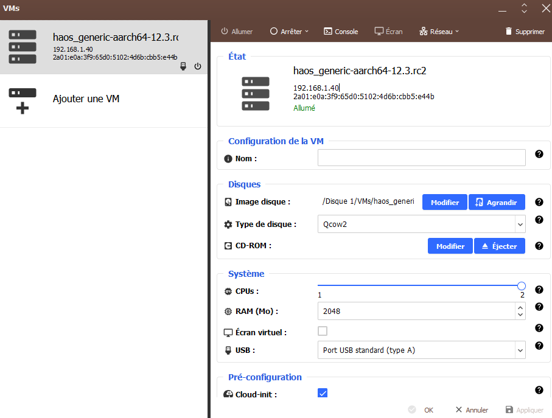
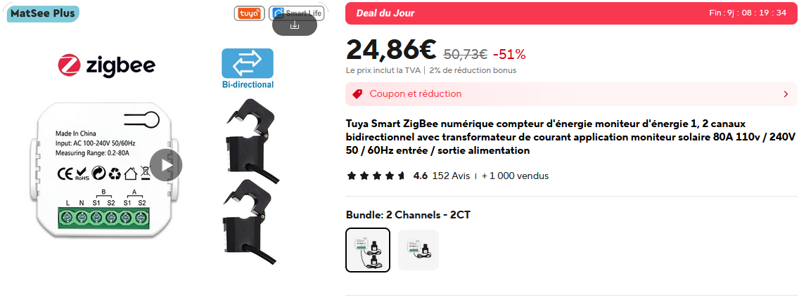
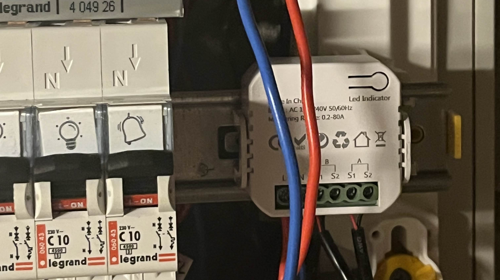
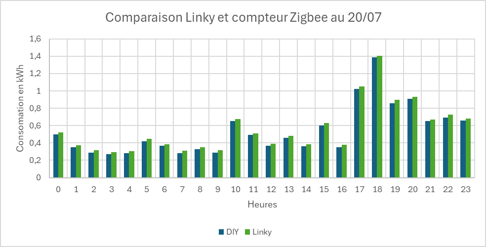

Home Assistant, un indispensable de la domotique ?
Depuis quelques années Home Assistant c’est rééllement imposé parmis les environement domotiques. Son efficacité, sa compatibilité et son énorme communauté la propulsé devant d’autres solutions open source comme Jeedom.
Ayant essayé Home Assistant il y a quelques mois maintenant, je me suis rendu compte que l’intégralité de mon installation domotique été compatible, mais également que de nouveau appareils pouvaient y être intégrés. Il me restait plus qu’à configurer une solution propre et durable au sein d’Home Assistant.
La plurpart des utilisateurs préconisent les appareils légers tels que la Raspberry Pi à partir du modèle 3 pour faire tourner le serveur domotique. Cepandant dans mon cas, j’ai pensé à une solution encore plus simple : et si je le faisait tourner sur ma box internet ?
La freebox ultra est la nouvelle box de free équipée du SoC Qualcomm IPQ 9574, donc 4 coeur ARM Cortex-A73 cadencés à 2.2GHz, ce qui la place entre la Raspberry Pi 4 et 5 en termes de performance. Elle supporte les VM (machines virtuelles) et les périphériques USB, ce qui est très utile pour les appareils zigbee. Il me suffit de brancher une clé Zigbee et de lancer la VM pour piloter tout mes appareils : climatiseurs, capteurs, éclairages…
 La fenêtre des VM freebox
Monitoring énergétique
Installation
Un atout considérable d’Home Assistant est la gestion des consomations énergétiques et des installation solaires. A partir de quelques données, il est possible d’établir tout un dashboard de monitoring (voir https://www.home-assistant.io/home-energy-management/). Dans un premier temps je souhaite me focaliser sur la consomation électrique. Pour cela j’ai trois solutions :
- Utilisation du compteur Linky par l’intérmédiaire de l’API Enedis (Cloud, voir https://github.com/bokub/ha-linky)
- Utilisation du compteur Linky local à l’aide d’un module TIC
- Installation d’un compteur Zigbee suplémentaire
J’ai retenu la dernière solution car elle me paraissait la moins chère mais me permettait également de comparer les données avec celles du cloud Linky. Un simple appareil Zigbee obtenable sur AliExpress pour une vintaine d’euros suffirait emplement.
 À ce prix la je n’attend pas grand chose… Mais je vais être agréablement surpris !
Celui-ci est calibré pour 80A maximum ce qui est largement suffisant. Il dispose de deux transformateur (capteurs de courant) pour deux canaux ce qui me permettera de différencier mes deux tableaux électriques. Son installation est simple, il suffit de le brancher au réseau et de boucler les deux sondes de courant (voir photo ci-dessous) :
 Le rouge sur le rouge et le bleu sur le bleu
Le capteur s’allume avec les deux sondes bien installées. L’appareilage se fait simplement et il me suffit maintenant de le configurer.
Configuration
Premièrement, l’appareil n’est pas entièrement plug and play, les données sont présentes mais brutes et non formatées. Heuresement, la communauté Home Assistant est assez grande pour avoir produit un quirk ZHA, qui est simplement un fichier de formattage pour Zigbee Home Assistant (voir https://forum.hacf.fr/t/zigbee2mqtt-et-probleme-avec-compteur-energie-tuya-zigbee/29847). Une fois le fichier intégré, on retrouve nos données de consomation :
 Mais que vais-je faire de toutes ces données !
Mais que vais-je faire de toutes ces données !
Il ne reste plus qu’à utiliser les templates d’intégration mathématique pour passer d’une puissance instantanée à une consomation en kWh (voir https://www.home-assistant.io/integrations/integration/). Cette consomation peut être directement intégrée à l’onglet Énergie d’Home Assistant :
 C’est génial, non ?
C’est génial, non ?
Ces données correspondes au capteur Zigbee, le taux d’énergie décarbonnée est directement récupéré de l’API d’Electricity Maps (super site à voir ici : https://app.electricitymaps.com/map).
Pour m’amuser, j’ai également intégré les données du cloud Linky pour comparer les consomations, et les résultats sont assez surprenants :

 Forcément c’est le Linky qui surestime…
Premièrement, le capteur Zigbee est très proche du capteur Linky malgrès son faible prix ! Par ailleur, les écarts sont quasi constant, ce qui fait penser à une consomation en amont non prise en compte. On serait sur une consomation environ de 25Wh, le compteur Linky à une consommation entre 2 et 10W et serait le seul appareil en amont. Cet écart est alors une erreur de calibrage du capteur en offset (constant), soit un appareil non identifié dans mon installation électrique. Le mystère reste à ce jour non résolu… (gros doutes sur ce capteur tout de même).